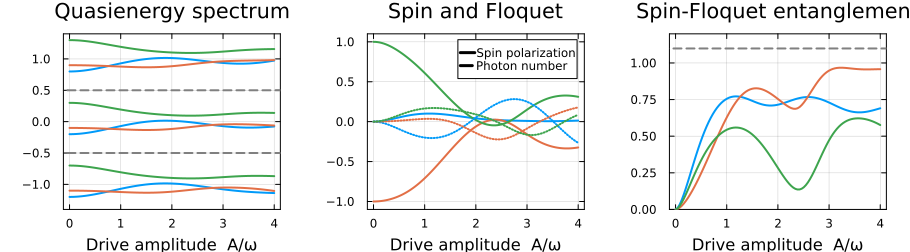

Floquet Systems: Defining Custom Algebras and Matrix Representations
This tutorial shows how to define a custom noncommutative operator algebra and matrix representations, which works together with the other symbolic operators and spaces in FermionicHilbertSpaces.jl.
Background: Floquet theory
A quantum system with a time-periodic Hamiltonian $H(t) = H(t+T)$ can be reduced to a static eigenvalue problem by embedding it into a Floquet-Hilbert space $\mathcal{H}_\text{phys} \otimes \mathcal{H}_\text{floquet}$. The second factor carries the Fourier harmonics of the drive. On the Floquet space we have the operators:
- the Floquet ladder $F$ with $F|n\rangle = |n{+}1\rangle$ (absorption of one drive photon),
- the Floquet number $N$ with $N|n\rangle = n|n\rangle$.
For a periodically driven two-level system
\[H(t) = \tfrac{\varepsilon}{2}\,\sigma_z + A\cos(\omega t)\,\sigma_x\]
the Floquet Hamiltonian is
\[H_F = \tfrac{\varepsilon}{2}\,\sigma_z + \omega N + \tfrac{A}{2}\,\sigma_x(F + F^\dagger).\]
Its eigenvalues are the quasienergies of the driven system; because $\mathcal{H}_\text{floquet}$ is infinite-dimensional we truncate to $|n| \le n_\text{max}$.
Defining the custom Floquet algebra
Here's what you need to define a new algebra and matrix representations:
- Symbolic types — structs representing your operators
@ncdeclaration — registers types with the algebraic machinery@commutativedeclaration — declares commutativity with other algebrasmul_effect— the multiplication / commutation rulesapply_local_operator— how operators act on basis statessymbolic_group— links operators to their Hilbert space
Let's load the package and import some things we need to overload or use
using FermionicHilbertSpacesusing FermionicHilbertSpaces: AbstractSymimport FermionicHilbertSpaces.NonCommutativeProducts: @nc, NCMul, @commutative, mul_effectStep 1 — Symbolic types
FloquetBasis represents a Floquet degree of freedom (having an id allows multiple Floquet modes). FloquetLadder represents $F^k$ and FloquetNumber represents $N^p$.
struct FloquetBasis id::Intendstruct FloquetLadder <: AbstractSym shift::Int # +1 → F (raising), −1 → F† (lowering), k → F^k basis::FloquetBasisendstruct FloquetNumber <: AbstractSym power::Int # exponent p in N^p basis::FloquetBasisendFloquetLadder(b::FloquetBasis) = FloquetLadder(1, b)Base.adjoint(F::FloquetLadder) = FloquetLadder(-F.shift, F.basis)Base.adjoint(N::FloquetNumber) = N # N is HermitianBase.show(io::IO, F::FloquetLadder) = print(io, "F^", F.shift)Base.show(io::IO, N::FloquetNumber) = print(io, "N^", N.power)const Floquets = Union{FloquetLadder,FloquetNumber}Union{Main.FloquetLadder, Main.FloquetNumber}Step 2 — @nc declaration
Registering types with @nc enables symbolic algebra operations (+, *) on these types and marks their multiplication as noncommutative.
@nc FloquetLadder FloquetNumberStep 3 — @commutative declarations
To make Floquet operators commute with all other AbstractSyms operators we write
@commutative Floquets AbstractSymStep 4 — Multiplication rules via mul_effect
mul_effect(a, b) is called when two adjacent factors a·b appear in a symbolic product and determines how the pair should be rewritten:
nothing→ already in canonical order; keep as-is (you need this to avoid an infinite loop)Swap(c)→ reorder asc·b·a(exchange with coefficientc)AddTerms((Swap(c), r, ...))→ reorder and add:a·b = c·b·a + r + ...
We will sort Floquet operators from different modes by their 'id', and for operators of the same mode we will put number operators before ladder operators.
function mul_effect(a::Floquets, b::Floquets) a.basis.id > b.basis.id && return b * a # different subsystem: sort by id a.basis.id < b.basis.id && return nothing # already in order return floquet_mul(a, b) # same subsystem: apply algebraendmul_effect (generic function with 21 methods)$F^j \cdot F^k = F^{j+k}$. Special case $j+k=0$: $F \cdot F^\dagger = \mathbf{1}$.
function floquet_mul(a::FloquetLadder, b::FloquetLadder) total_shift = a.shift + b.shift total_shift == 0 && return 1 return FloquetLadder(total_shift, a.basis)endfloquet_mul (generic function with 1 method)$N^p \cdot N^q = N^{p+q}$. Special case $p=q=0$: $N^0 = \mathbf{1}$.
function floquet_mul(a::FloquetNumber, b::FloquetNumber) a.power == b.power == 0 && return 1 return FloquetNumber(a.power + b.power, a.basis)endfloquet_mul (generic function with 2 methods)$F^k \cdot N = N \cdot F^k - k\,F^k$, from $[N, F^k] = k\,F^k$ rearranged as $F^k N = N F^k - k F^k$.
function floquet_mul(a::FloquetLadder, b::FloquetNumber) if b.power == 1 return b * a - a.shift * a # Base case: F^k * N = N * F^k - k * F^k else N_remaining = FloquetNumber(b.power - 1, b.basis) term1 = FloquetNumber(1, b.basis) * a * N_remaining # N * F^k * N^(p-1) term2 = -a.shift * a * N_remaining # -k * F^k * N^(p-1) return term1 + term2 end throw(ArgumentError("Should not reach here"))endfloquet_mul (generic function with 3 methods)$N \cdot F^k$ is already in normal order ($N$ sorts before $F$).
floquet_mul(::FloquetNumber, ::FloquetLadder) = nothingfloquet_mul (generic function with 4 methods)Step 5 — apply_local_operator
This is the bridge between symbolic operators and matrix elements. Given an NCMul of Floquet factors and a single basis state, it returns the resulting state(s) and amplitude(s).
Let's make a type for the Floquet basis states
using FermionicHilbertSpaces: AbstractBasisStatestruct FloquetState <: AbstractBasisState mode::IntendTo hook it up to the matrix-representation machinery, we need to define `applylocaloperator(op, state::FloquetState, space, precomp)
import FermionicHilbertSpaces: apply_local_operator$F^k$ shifts the Floquet index by $k$.
apply_local_operator(op::FloquetLadder, state::FloquetState, space, precomp) = FloquetState(state.mode + op.shift), 1apply_local_operator (generic function with 7 methods)$N^p$ multiplies the amplitude by $n^p$, where $n$ is the current mode index.
apply_local_operator(op::FloquetNumber, state::FloquetState, space, precomp) = state, state.mode^op.powerapply_local_operator (generic function with 8 methods)Step 6 — symbolic_group
The matrix-representation machinery uses symbolic_group to match operators to Hilbert spaces. We'll associate each Floquet operator with a FloquetBasis and use that object as the label for the Hilbert space
import FermionicHilbertSpaces: symbolic_groupsymbolic_group(f::Floquets) = f.basissymbolic_group(b::FloquetBasis) = bsymbolic_group (generic function with 17 methods)Building the Hilbert space
Now we can make a Hilbert space and get matrix representations of the Floquet operators.
using FermionicHilbertSpaces: GenericHilbertSpacefloquet_basis = FloquetBasis(0)F = FloquetLadder(floquet_basis) # raising operator FNf = FloquetNumber(1, floquet_basis) # photon number Nn_max = 5 # keep Floquet modes n = −n_max … n_maxHfloq = GenericHilbertSpace(floquet_basis, FloquetState.((-n_max):n_max))representation(F, Hfloq; projection=true) # we need projection=true because we've truncated the Floquet space11×11 SparseArrays.SparseMatrixCSC{Float64, Int64} with 10 stored entries:
⋅ ⋅ ⋅ ⋅ ⋅ ⋅ ⋅ ⋅ ⋅ ⋅ ⋅
1.0 ⋅ ⋅ ⋅ ⋅ ⋅ ⋅ ⋅ ⋅ ⋅ ⋅
⋅ 1.0 ⋅ ⋅ ⋅ ⋅ ⋅ ⋅ ⋅ ⋅ ⋅
⋅ ⋅ 1.0 ⋅ ⋅ ⋅ ⋅ ⋅ ⋅ ⋅ ⋅
⋅ ⋅ ⋅ 1.0 ⋅ ⋅ ⋅ ⋅ ⋅ ⋅ ⋅
⋅ ⋅ ⋅ ⋅ 1.0 ⋅ ⋅ ⋅ ⋅ ⋅ ⋅
⋅ ⋅ ⋅ ⋅ ⋅ 1.0 ⋅ ⋅ ⋅ ⋅ ⋅
⋅ ⋅ ⋅ ⋅ ⋅ ⋅ 1.0 ⋅ ⋅ ⋅ ⋅
⋅ ⋅ ⋅ ⋅ ⋅ ⋅ ⋅ 1.0 ⋅ ⋅ ⋅
⋅ ⋅ ⋅ ⋅ ⋅ ⋅ ⋅ ⋅ 1.0 ⋅ ⋅
⋅ ⋅ ⋅ ⋅ ⋅ ⋅ ⋅ ⋅ ⋅ 1.0 ⋅ Now Floquet operators will work together algebraically with the spin operators, and we can get matrix represnentations of such mixed operators. Let's do some physics.
Driven two level system.
We'll take a spin 1 as our physical system and couple it to the Floquet space to model a driven three-level system. The full Hilbert space is a product of the spin and Floquet spaces, and the Hamiltonian is a symbolic expression mixing spin and Floquet operators. When making the full space, we use the SectorConstraint to organize the basis states in Floquet sectors, which will be convenient later.
using FermionicHilbertSpaces: SectorConstraint@spin σHspin = hilbert_space(σ, 1)floquet_sectors = SectorConstraint(only; maps=s -> s.mode, spaces=[Hfloq])H = tensor_product((Hspin, Hfloq); constraint=floquet_sectors)33-dimensional SectorHilbertSpace
Parent: ProductSpace(33-dim, 2 factors)
Sectors: 11 total [-5 (3-dim), ..., 5 (3-dim)]Floquet operators can be used together with spin operators to build the Floquet Hamiltonian (since we used @commutative to declare that they commute):
ω = 1.0 # Drive frequency (energy unit)ε = 0.2 * ω # Zeeman splitting: sets |+1⟩ and |-1⟩ baseline energiesD = 0.3 * ω # Single-ion anisotropy (D * Sz^2): activates the |0⟩ statefloquet_ham(A) = ε * σ[:z] + D * σ[:z]^2 + ω * Nf + (A / 2 * σ[:x] * F + hc)floquet_ham(2)Sum with 7 terms:
0.5*F^-1*σ[:-]+0.5*F^1*σ[:-]+0.5*F^-1*σ[:+] + ...Quasienergy spectrum vs drive amplitude
We sweep the drive amplitude A and collect quasienergies, spin polarisation $\langle\sigma_z\rangle$, Floquet number expectation value and entanglement between the spin and Floquet spaces.
using LinearAlgebraA_values = range(0, 4 * ω, length=100)n_states = dim(H)spectrum = zeros(length(A_values), n_states)spin_pol = zeros(length(A_values), n_states)entanglement = zeros(length(A_values), n_states)floquet_num = zeros(length(A_values), n_states)σz_mat = representation(σ[:z], H)Nf_mat = representation(Nf, H)ptmap = partial_trace(H => Hspin) # map to trace out Floquet spaceprev_vecs = nothingfor (i, A) in enumerate(A_values) mat = representation(floquet_ham(A), H, :dense; projection=true) vals, vecs = eigen!(Hermitian(mat)) #track states by overlaps to avoid discontinuities global prev_vecs if prev_vecs !== nothing overlaps = abs2.(prev_vecs' * vecs) remaining = collect(axes(vecs, 2)) order = similar(remaining) for j in axes(prev_vecs, 2) k = argmax(overlaps[j, remaining]) order[j] = remaining[k] deleteat!(remaining, k) end vals = vals[order] vecs = vecs[:, order] end prev_vecs = vecs #save observables spectrum[i, :] = vals .- sum(vals) / length(vals) # shift to zero mean for (j, v) in enumerate(eachcol(vecs)) spin_pol[i, j] = dot(v, σz_mat, v) rho = ptmap(v) # trace out Floquet space entanglement[i, j] = -sum(λ * log(λ) for λ in eigvals!(Hermitian(rho)) if λ > 1e-12) floquet_num[i, j] = dot(v, Nf_mat, v) endendPlots
Each line traces one Floquet eigenstate as the drive amplitude grows. The grey dashed lines mark the Brillouin zone boundaries at $\pm\tfrac{\omega}{2}$. We plot the central three zones. We plot the quasienergies, <σz> and entanglement between spin and Floquet spaces as a function of drive amplitude.
using Plotsfloquet_zone_inds = reduce(vcat, [indices(n, H) for n in -1:1]) # Get the zone indices of zones with floquet numbers -1 to 1.p1 = plot(xlabel="Drive amplitude A/ω", title="Quasienergy spectrum", legend=false, frame=:box, size=(500, 360), ylims=(-1.4, 1.4))plot!(p1, A_values ./ ω, spectrum[:, floquet_zone_inds]; lw=2, color=[1 2 3])hline!(p1, [0.5, -0.5] .* ω; color=:gray, lw=2, ls=:dash)central_zone = indices(0, H) # central zone indicesn = length(central_zone)p2 = plot(xlabel="Drive amplitude A/ω", title="Spin and Floquet", legend=true, frame=:box, size=(500, 360), ylims=1 .* (-1.1, 1.1),)plot!(p2, A_values ./ ω, spin_pol[:, central_zone]; lw=2, color=[1 2 3], ls=:solid, label=false)plot!(p2, A_values ./ ω, floquet_num[:, central_zone]; lw=2, color=[1 2 3], ls=:dot, label=false)plot!(p2, Float64[], Float64[]; lw=3, color=:black, ls=:solid, label="Spin polarization")plot!(p2, Float64[], Float64[]; lw=3, color=:black, ls=:dash, label="Photon number")p3 = plot(xlabel="Drive amplitude A/ω", title="Spin-Floquet entanglement", legend=false, frame=:box, size=(500, 360), ylims=(0, log(3) + 0.1))plot!(p3, A_values ./ ω, entanglement[:, central_zone]; lw=2)hline!(p3, [log(3)]; color=:gray, lw=2, ls=:dash)plot(p1, p2, p3; layout=(1, 3), size=0.7 .* (1300, 360), margins=4Plots.mm)
This page was generated using Literate.jl.